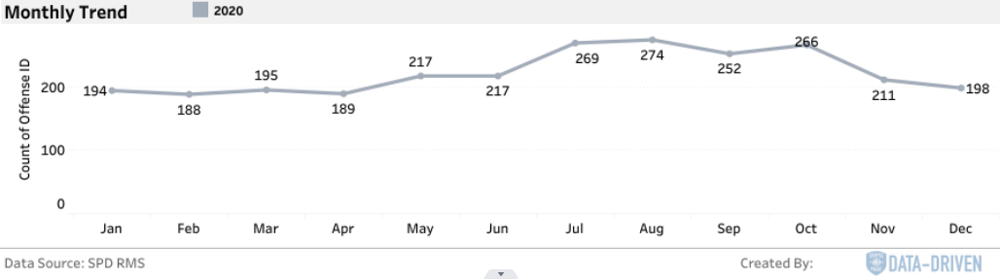
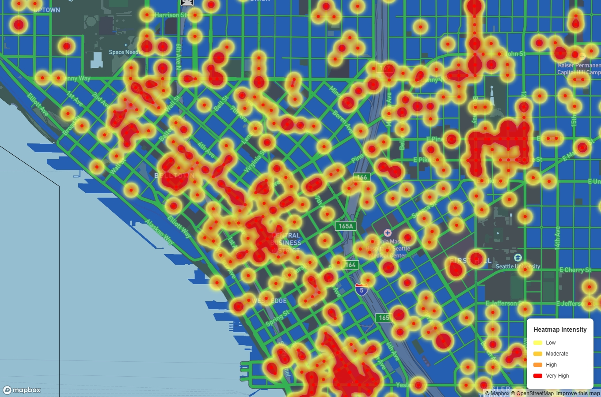
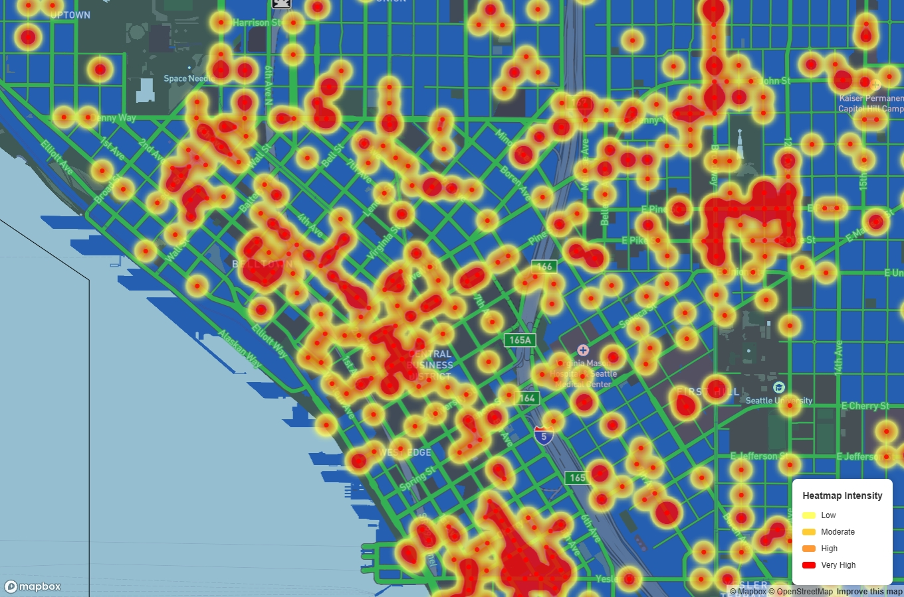

Assault Crime Analysis in Seattle (2020)
Crime Distribution & Monthly Trends
Seattle's crime data reveals significant variations among different neighborhoods. The following five areas recorded the highest number of assaults in 2020:
- Capitol Hill: 235 cases - A dense residential and commercial area with vibrant nightlife.
- Downtown Commercial: 197 cases - A major business and transit hub, with high foot traffic.
- Belltown: 190 cases - Known for bars and entertainment, contributing to nighttime crime.
- University District: 106 cases - A student-heavy area, with crime patterns influenced by population mobility.
- Mid Beacon Hill: 98 cases - A diverse residential area, with mixed socioeconomic factors.
Crime trends indicate that incidents peak in summer (July & August) and again in October. Warmer months see increased public activity, while October’s spike may relate to seasonal events.
Why Use a Heatmap?
Crime visualization can be approached in multiple ways. Below, we compare two methods:
 

The heatmap provides a more detailed view of crime clusters, making it easier to identify high-risk locations. Unlike a choropleth map, which generalizes data over large areas, the heatmap shows precise crime distribution.
Additionally, the color gradient from yellow (low) to red (high) creates an intuitive representation of crime intensity. Users can quickly detect patterns and assess how crimes are concentrated in specific zones, rather than averaging across neighborhoods.
Heatmaps are particularly beneficial for urban safety planning. For example, instead of allocating equal police resources across all of Downtown Seattle, resources can be focused on micro-locations where crimes frequently occur.
Applications & Future Improvements
How Our Crime Heatmap Can Be Used
- Crime Prevention & Patrol Optimization: Law enforcement can identify high-risk zones and allocate resources strategically to prevent crime before it happens.
- Urban Planning: City planners can enhance safety by improving street lighting, increasing police presence, and designing crime-resistant public spaces.
- Community Awareness: Local communities can use the heatmap to advocate for safety improvements and organize crime prevention initiatives tailored to their specific needs.
- Business & Real Estate Decision-Making: Business owners and property buyers can assess crime trends to make informed location choices.
Potential Future Enhancements
- Real-Time Data Integration: Currently, the heatmap is based on historical crime data. In the future, we could incorporate real-time crime reports to track crime trends dynamically.
- Interactive Filtering: Users can refine data views based on crime type, severity, and time of occurrence to better understand trends.
- Predictive Analytics: Future iterations could use machine learning models to predict: Future crime hotspots based on historical data. Seasonal or event-based fluctuations to proactively allocate law enforcement resources.
By continuously improving the accuracy and interactivity of the crime heatmap, we hope to make it an indispensable tool for enhancing public safety, city planning, and community-driven crime prevention efforts.